Explore
Approved application · approved logoEvery image below is an actual canonical PNG. Open an image for its full resolution. These are authored design scenes, not current-app browser captures.
Rename thread · error
thread-rename-errorActions and implementation pointers
+ New page · Journal · Explore · All pages · ⌄ · Reflections · › · Reading · Cancel · Save name · Ask Journl · Today’s Journal · Close · Instant · Thinking · ✓ Unlinked notes · All notes · ✓ Newest first · Oldest first
apps/web/src/app/(app)/explore/_components/explore-overview.tsxapps/web/src/app/(app)/explore/_components/cluster-items.tsxapps/web/src/app/(app)/explore/_components/source-contexts.tsx

SHA256 596a40a8e53bb684314f5805a7890182452adbce6161989fcf67aeb89e50735b

SHA256 fa7297c6b9754c0ed8b25b255312e918928b78bd2fb842b9c541a622e1e8c818

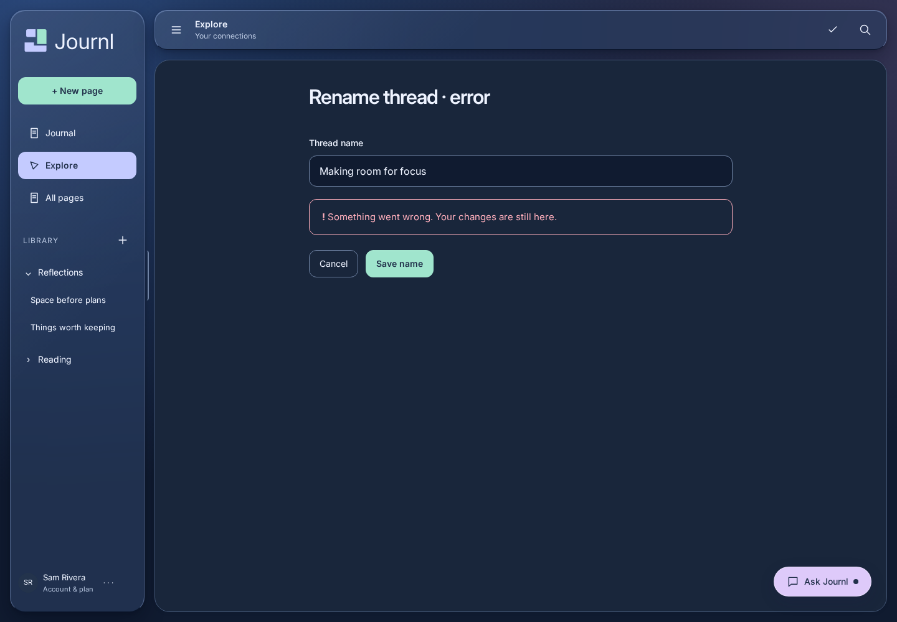
SHA256 d3ba85479ff059ed144c313e905adc2494f9e02a60459e7c8303179e83963be7

SHA256 bf3088e0d72a8231df4c74ec40baaa5557d88e4e4ab34f339fac54776311bb29
Thread name required
rename-invalidActions and implementation pointers
+ New page · Journal · Explore · All pages · ⌄ · Reflections · › · Reading · Save name · Ask Journl · Today’s Journal · Close · Instant · Thinking · ✓ Unlinked notes · All notes · ✓ Newest first · Oldest first
apps/web/src/app/(app)/explore/_components/explore-overview.tsxapps/web/src/app/(app)/explore/_components/cluster-items.tsxapps/web/src/app/(app)/explore/_components/source-contexts.tsx

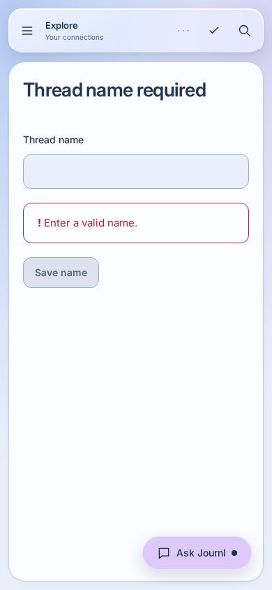
SHA256 a59c0de63f84259d128e00faa705052c77de67b839702c6b86685be159c2e718

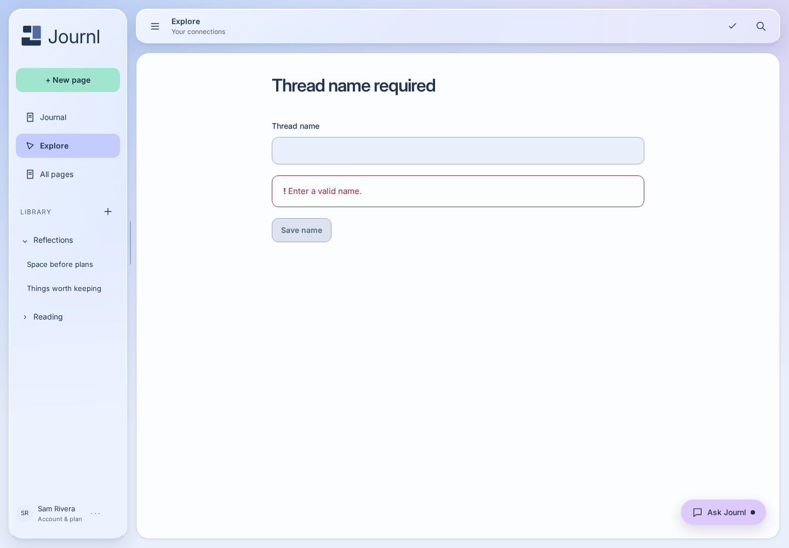
SHA256 88d65f4a38b843cb6cd31b54dc8f6cf37c1252456ce1b972e915cb454e4e2523

SHA256 30a39e00988617ba0e073682934c1556c471689c33afc780c17d3701b8abd3cf

SHA256 d9f3ac1c651fef044357808cda8d311b810f212d7acdf7825ff91a5fa5fbefaf
This thread has changed
thread-changedActions and implementation pointers
+ New page · Journal · Explore · All pages · ⌄ · Reflections · › · Reading · Open successor thread · Back to Explore · Ask Journl · Today’s Journal · Close · Instant · Thinking · ✓ Unlinked notes · All notes · ✓ Newest first · Oldest first
apps/web/src/app/(app)/explore/_components/explore-overview.tsxapps/web/src/app/(app)/explore/_components/cluster-items.tsxapps/web/src/app/(app)/explore/_components/source-contexts.tsx

SHA256 1d5aebc33daaa5b9d5340f05077118df8bd474dd53eae2918ae23da3d5a4e0fd

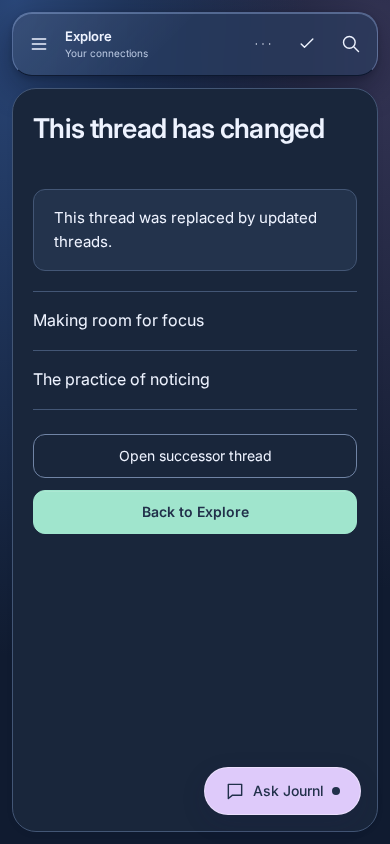
SHA256 d2bdb1931bd5f59d50f424e04efd90514e13dc97f14633d41bc8c403162289dd

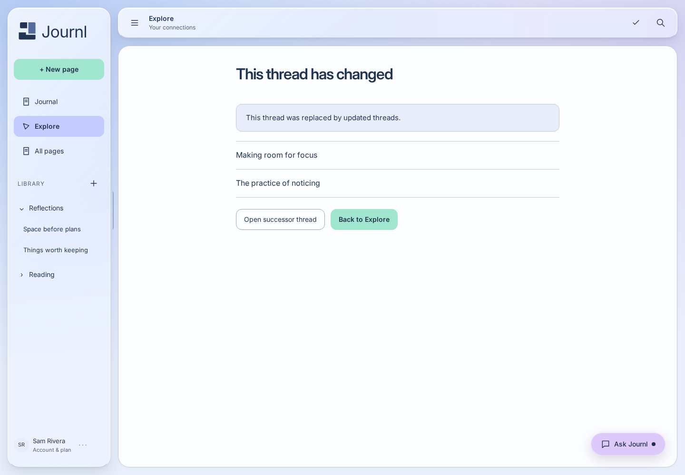
SHA256 51079b5cabdaea4d4d6202be15861c788890808970403c0e9934b7ff320cd496

SHA256 26cc47de1ecaf86fa4c7d8f4965b2ae25d47bd934d9c42946a092e63a71de1ed
Related notes
thread-no-explanationActions and implementation pointers
+ New page · Journal · Explore · All pages · ⌄ · Reflections · › · Reading · Ask Journl · Today’s Journal · Close · Instant · Thinking · ✓ Unlinked notes · All notes · ✓ Newest first · Oldest first
apps/web/src/app/(app)/explore/_components/explore-overview.tsxapps/web/src/app/(app)/explore/_components/cluster-items.tsxapps/web/src/app/(app)/explore/_components/source-contexts.tsx

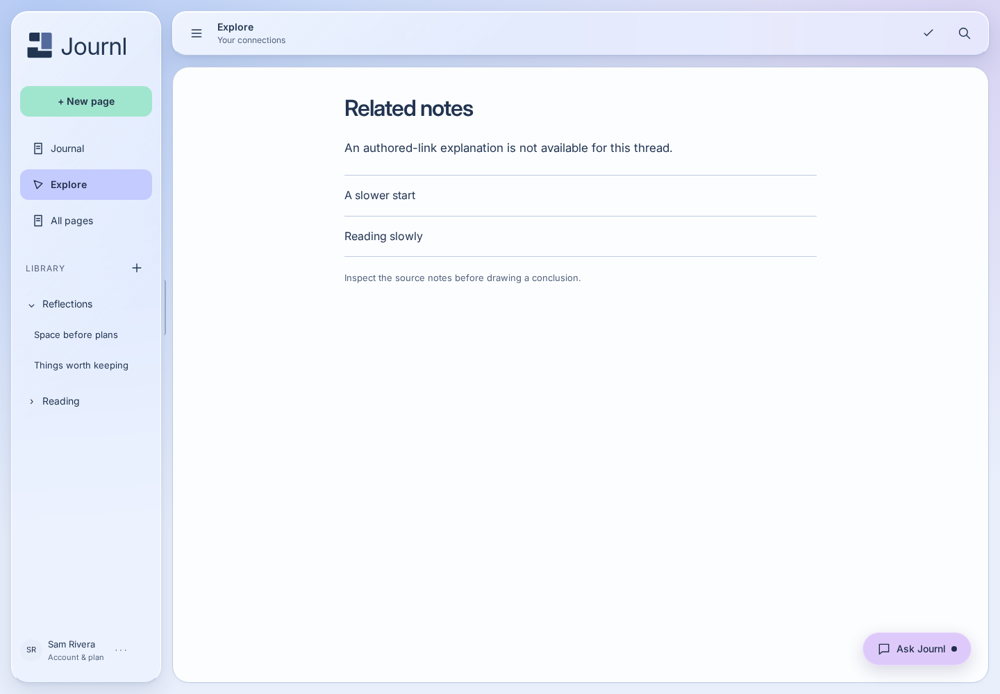
SHA256 59b240c93b8072e7021b455213b4d558895507c1f583b948eaf4158859c94014

SHA256 86239f5c85ad32ff2f7de6209f2e2e1b9ea0bee30a49599ec9511a6cb5811702

SHA256 b335e0ce6f5efa63983f31e904a3e4e05a6502e2356fb501340d3f393cab580b

SHA256 f8b5afb049658e0b42bf95870f9573726f96f38c25005f54f2715aeb945e567d
No external sources
source-emptyActions and implementation pointers
+ New page · Journal · Explore · All pages · ⌄ · Reflections · › · Reading · Notes · Ask Journl · Today’s Journal · Close · Instant · Thinking · ✓ Unlinked notes · All notes · ✓ Newest first · Oldest first
apps/web/src/app/(app)/explore/_components/explore-overview.tsxapps/web/src/app/(app)/explore/_components/cluster-items.tsxapps/web/src/app/(app)/explore/_components/source-contexts.tsx

SHA256 ae82a22936f05750e891aa03c16fded0f2cca19e7cba1b41541e6fefaccec1f6

SHA256 5a2c1c0b1bb9dd8b36df731bdfd3e20bd47d41f2751878ade5d09a1d6d062f45

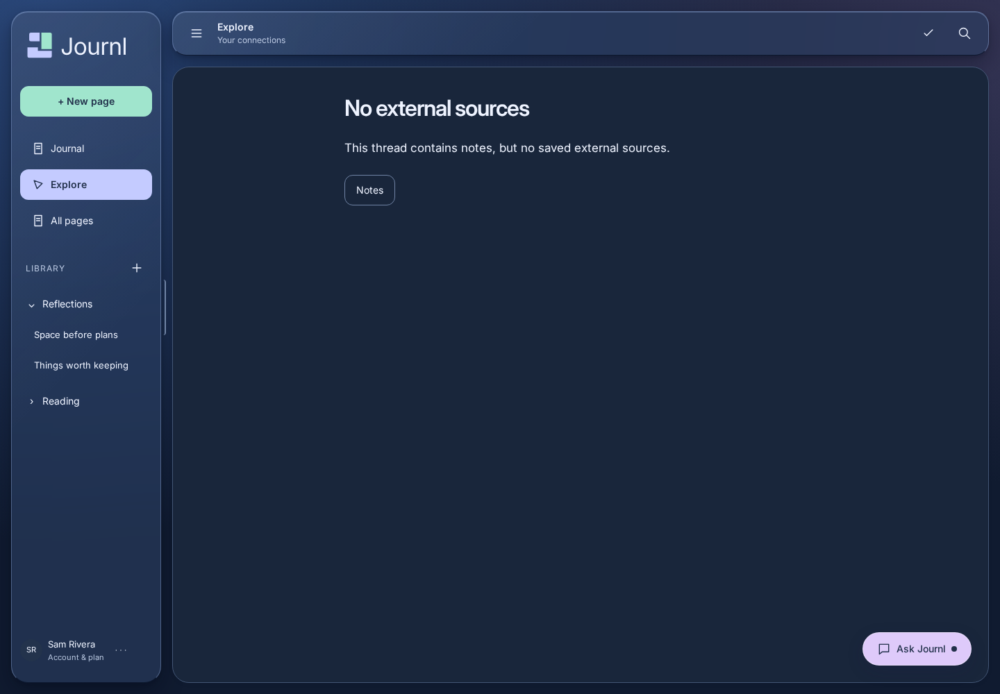
SHA256 55bd730051811d1d8b626b7c9815171fb7a3a4a3a6aa62cacb07706d7b2054b6

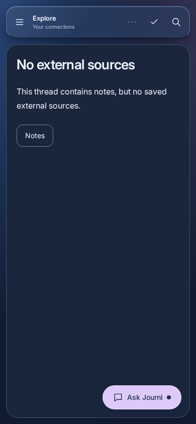
SHA256 4e88abd9b7ef12335559826cda93c821f1086355abb4ed64dc112c7f70d5ff28
Source context · loading
source-context-loadingActions and implementation pointers
+ New page · Journal · Explore · All pages · ⌄ · Reflections · › · Reading · Ask Journl · Today’s Journal · Close · Instant · Thinking · ✓ Unlinked notes · All notes · ✓ Newest first · Oldest first
apps/web/src/app/(app)/explore/_components/explore-overview.tsxapps/web/src/app/(app)/explore/_components/cluster-items.tsxapps/web/src/app/(app)/explore/_components/source-contexts.tsx

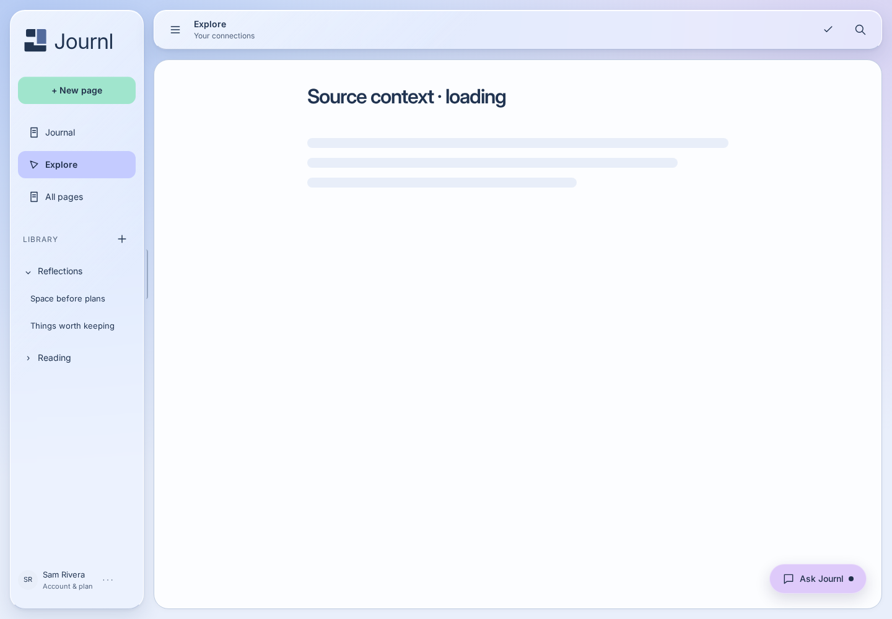
SHA256 941fdd2b7232f53732c6e3bc4be752006de0040fdc0ba4feb82c63799c4057d5

SHA256 f8ecfb7966af2c08939321513b035a85e9460eba16fe1bb257eb70e4256ad89d

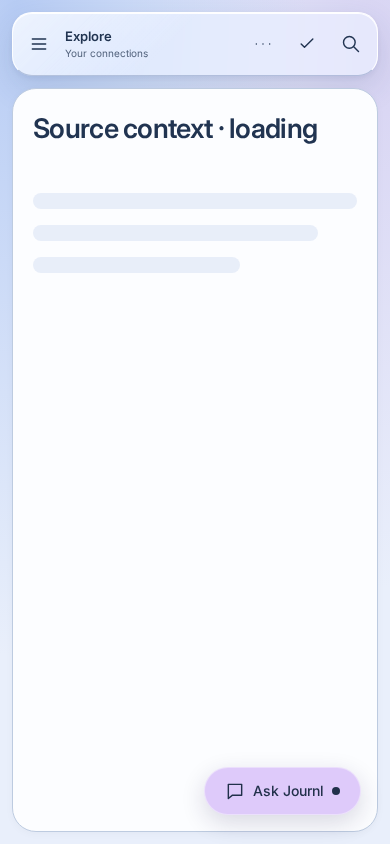
SHA256 f13d0e5073f3a0bfa68bc167c8ea731516e35c4f0c4040099429dc9b25072c16

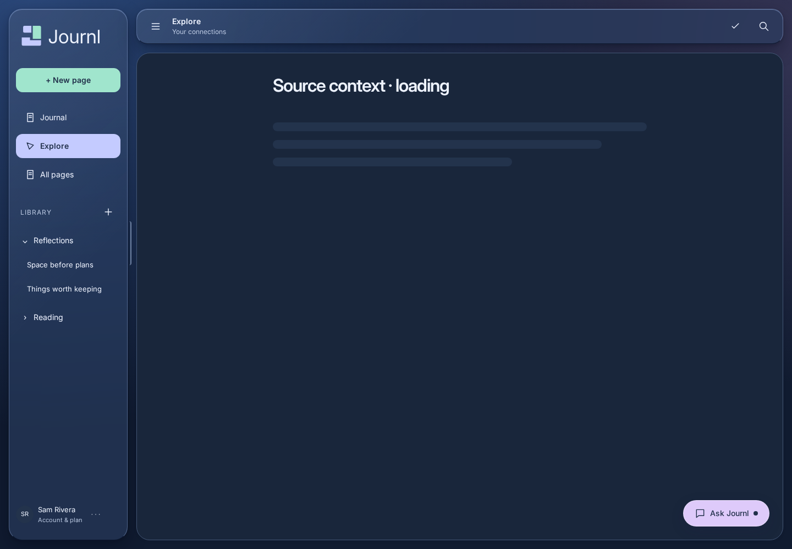
SHA256 1a4d63f6296732f429636e96c290c4438cfae3c7d637a7a0236f35a60bbe24f0
Source context · empty
source-context-emptyActions and implementation pointers
+ New page · Journal · Explore · All pages · ⌄ · Reflections · › · Reading · Ask Journl · Today’s Journal · Close · Instant · Thinking · ✓ Unlinked notes · All notes · ✓ Newest first · Oldest first
apps/web/src/app/(app)/explore/_components/explore-overview.tsxapps/web/src/app/(app)/explore/_components/cluster-items.tsxapps/web/src/app/(app)/explore/_components/source-contexts.tsx

SHA256 cfc4e6be680832b73635540d59767b38c6e5e922848a23a769284432dce0c537

SHA256 80b6d14a20f3bc9dd49f708916be0b4de6f5197a4fa8a23458fa55c90bcf5607

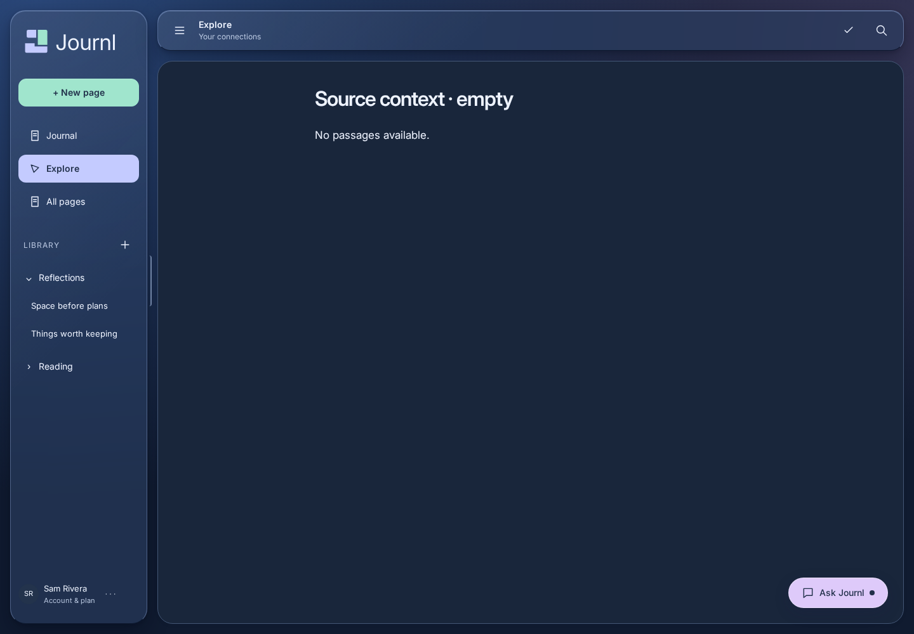
SHA256 94cfc6b9a5b540642218b751cc008d94da8edb65100a9b2d22987d649cc1931a

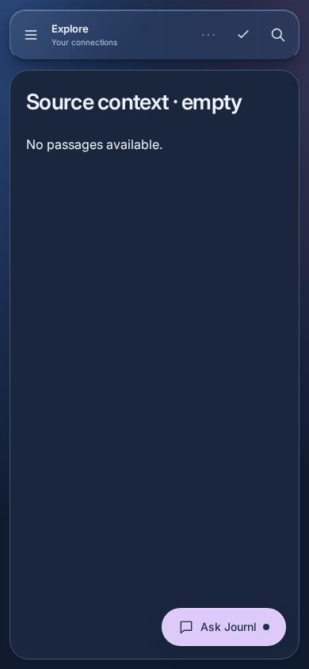
SHA256 7980d8366a3334da34cddc27a78a4ebcb8e5811180d476886c95d38b63f5b04c
Source context · error
source-context-errorActions and implementation pointers
+ New page · Journal · Explore · All pages · ⌄ · Reflections · › · Reading · Retry · Ask Journl · Today’s Journal · Close · Instant · Thinking · ✓ Unlinked notes · All notes · ✓ Newest first · Oldest first
apps/web/src/app/(app)/explore/_components/explore-overview.tsxapps/web/src/app/(app)/explore/_components/cluster-items.tsxapps/web/src/app/(app)/explore/_components/source-contexts.tsx

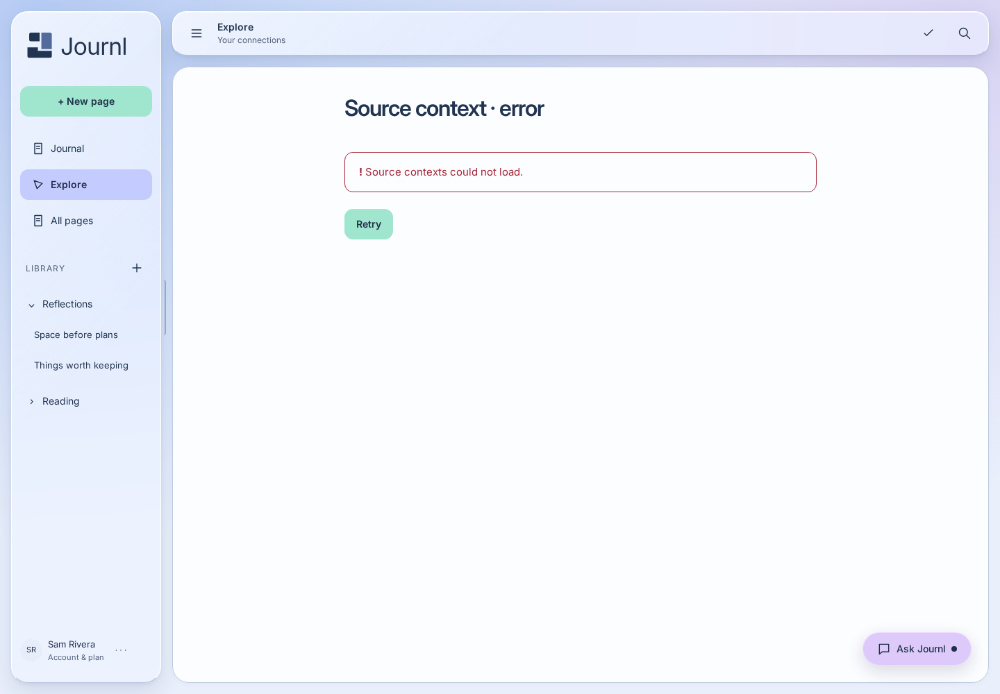
SHA256 7bca869c8f492da2d1fb762b93abcd76a59bc0a49c5a3ba87918ca2a8cc5b301

SHA256 c35d06d564b25dd46773d8dd999d594843ab7cdb8d9509865b45c316ecb2f0f4

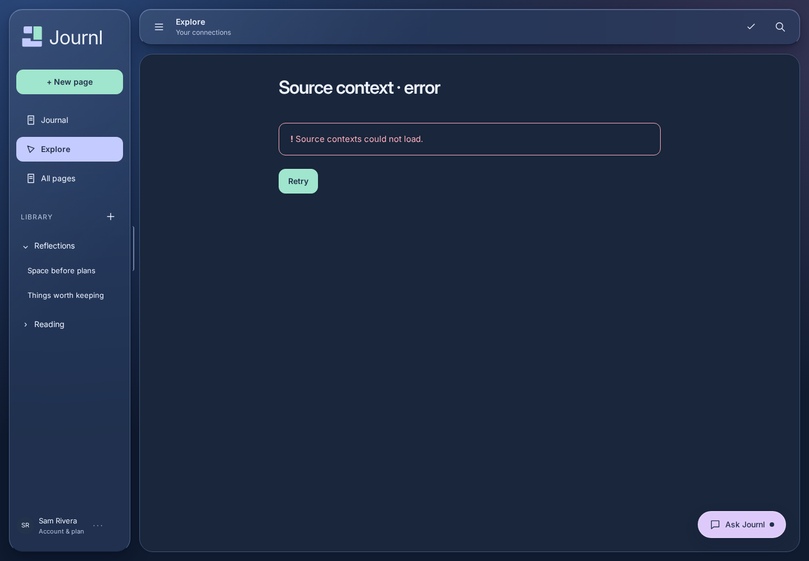
SHA256 c3037bdefea36014be37d9f7dbadb3efdfefb82b87e978bfeae2802828903ed5

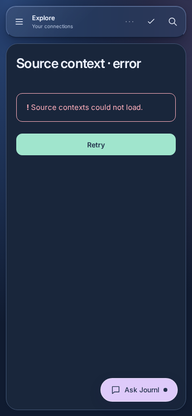
SHA256 176b2e52e3b61f015b4c47848af2a91490d9238cec2f02918b0f23f534211b18
Source context · passages
source-context-passagesActions and implementation pointers
+ New page · Journal · Explore · All pages · ⌄ · Reflections · › · Reading · Open source · Open note · Next passage · Ask Journl · Today’s Journal · Close · Instant · Thinking · ✓ Unlinked notes · All notes · ✓ Newest first · Oldest first
apps/web/src/app/(app)/explore/_components/explore-overview.tsxapps/web/src/app/(app)/explore/_components/cluster-items.tsxapps/web/src/app/(app)/explore/_components/source-contexts.tsx

SHA256 af23f4b43583eb1654c2902614afb02f23a9b04d917aa371676962dea23a7f95

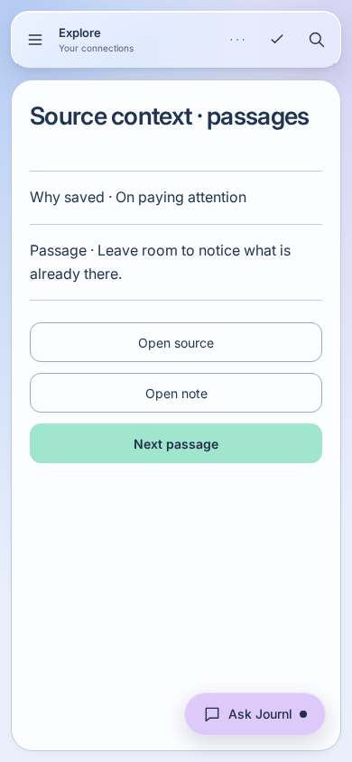
SHA256 3edb611731c8df82214049d744fe2c296e4d75e99a2ecdc1a5133645070d0ea7

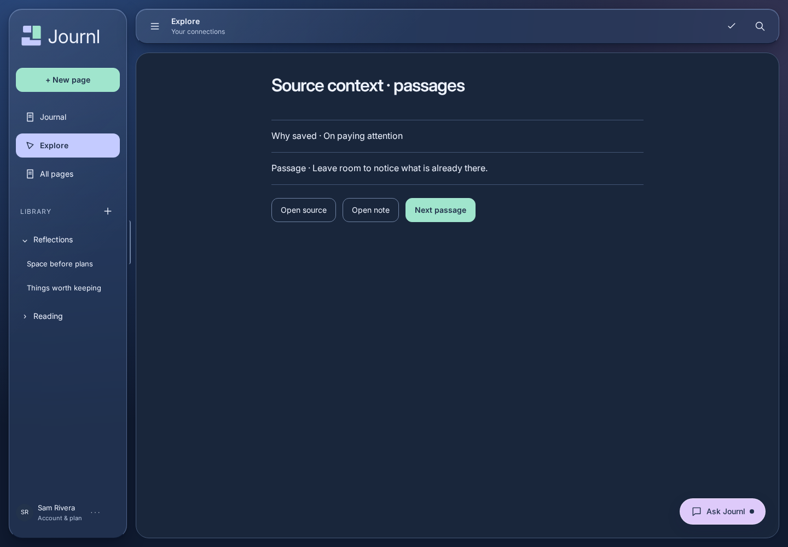
SHA256 79101ec0b8eb2fadb38d845c7b1f300728ef0a6317ee4e630b4c78c76552d381

SHA256 494e9597e3bb160825aefeb02f6856ca1184d61aafe94194304d16c25fea9a12
Graph · selection
graph-selectionActions and implementation pointers
+ New page · Journal · Explore · All pages · ⌄ · Reflections · › · Reading · Incoming · Outgoing · Open original · Ask Journl · Today’s Journal · Close · Instant · Thinking · ✓ Unlinked notes · All notes · ✓ Newest first · Oldest first
apps/web/src/app/(app)/explore/_components/explore-overview.tsxapps/web/src/app/(app)/explore/_components/cluster-items.tsxapps/web/src/app/(app)/explore/_components/source-contexts.tsxapps/web/src/app/(app)/graph/_components/graph-explorer.tsx

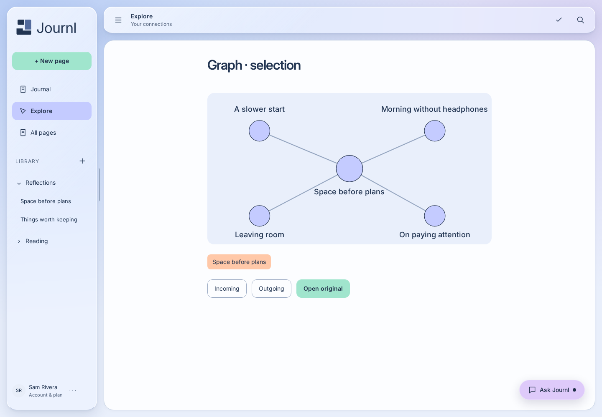
SHA256 431df59221cebba9e5ac198522b289ae80ad89b870d351da0ed80af682a2fe33

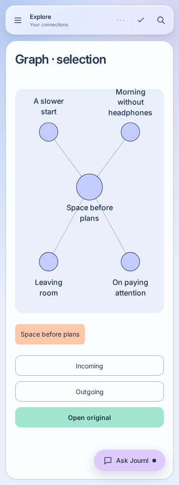
SHA256 cd2fde04f553fbbf99985d9fb6917d4ab6f30fb267619696e63464d85f3f0a28

SHA256 4d24b4350d6cad53ceb5c2c40cfa0dbc7f49af83224c48c3847a01783c8e49d1

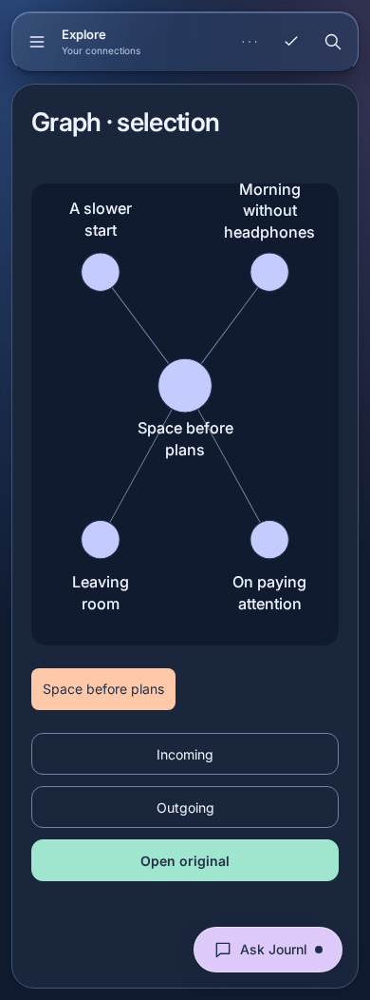
SHA256 809ac3161eb361e17d7ffdc00b029e2f626cdbf36af89ea03bc0fd66d814d8e0